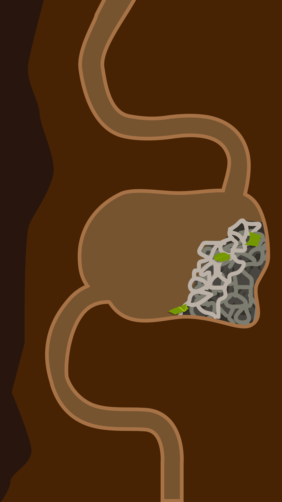

In the basement of the volcanology building at the University of Oregon, Dr. Robert Schofield sat hunched over his leaf-cutter ant colony, housed in a cluster of glass terrarium boxes connected by intertwining tubes. He watched as Ant 256 plunged her mandibles into a waxy leaf for the last time.
It’s almost time for Ant 256 to change her career. Six legs hold her firmly in place while her jaw muscles contract her cranial scissors, shearing the leaf apart. All around, her sisters work. Some cut the leaves into fragments, while others haul them back to the subterranean colony in a neat line. Those with sharp mandibles both cut and carry, while ants with dull mandibles only carry — a division of labor that maximizes their productivity.
Ant 256 is middle-aged — about five months old — and her job since birth has been a cutter. Her mandibles were once as sharp as a surgical scalpel, but have dulled after months of punching, cutting and slicing. She struggles to work them through the leaf. Her job is taking longer to complete, and she’s tired. If she only carries the leaf fragments, less energy will be wasted. It happens to all cutters once their mandibles dull down enough, but the decision comes with a cost. As a carrier with dull mandibles, she’s less useful to the colony, and she knows it. So when the colony is attacked, she may have to change duties again.
The attack, like everything that happens in the lab, won’t come from nature, but from Schofield and his student assistants.
Twelve years ago, in the same lab, Schofield began his experiments on leaf cutter ants. The Atta cehpalotes ants are the subjects of his experiments, which unveil a new depth to the complexities of ant civilizations.
“I think both humans and ants are remarkable and beautiful products of evolution, each in their own way. And we are not that different from each other,” Schofield said. “We can learn all sorts of things about ourselves from our little sisters, the ants.”
In a 2010 research paper, Schofield described the behavior of Cutting vs. Carrying, and detailed how difficult cutting leaves can be for ants with dulled mandibles. The research showed the dulled-mandible ants go on to help the colony in other ways, and it’s now widely accepted by the scientific community. He theorizes the behavior is explained through energetics — the need to conserve energy which is a guiding mechanism of the colony’s life.
Schofield’s lab contains thousands of tiny ants, like Ant 256. Day and night, they crawl up from their colony to a regularly-replenished leaf-foraging bin. Ants cut and carry trimmed leaf fragments down winding polyethylene tubes to their subterranean empire. But they don’t actually eat the leaves. Just like farmers growing crops, the ants grow a white, spongy fungus on the leaves in an underground garden. The ants tend to the fungus, keeping it healthy and trimmed, then eat it and feed it to their brood. This tiny, ancient form of agriculture was developed about 50 million years ago. Humans have only been growing crops for about 15 thousand years.
“Evolution has not neglected the so-called ‘lower animals’ and has given them abilities that are, in many ways, equal to ours,” Schofield said. Ants and humans are two of four animal groups to have achieved agriculture — termites and bark beetles are the others.
One of Schofield’s newest experiments explores a peculiar behavior of the ant colony while under a simulated attack. “We noticed that some ants attack us when we intrude, and some ants run away,” he said. After observing this behavior, Schofield wondered, similar to ants switching from cutting to carrying, if energy conservation might explain the reason some ants flee and some ants attack. “It takes a lot of energy to make an ant,” he explained, “and it doesn’t make sense for the colony to sacrifice new ants with sharp mandibles to the defense of the colony when the old worn out ants could do just as well.”
The name of this new experiment: Heroes and Cowards. Schofield’s hypothesis states that heroes have duller or broken mandibles, and cowards have sharper mandibles. Schofield and his team of UO students have observed hundreds of ants for this experiment, and Ant 256 is among them. If the evidence is consistent with his thesis, the experiment will support the idea that conserving energy is paramount to the leaf-cutter ants.
As Ant 256 pinches a piece of leaf 50-times her weight between her dulled mandibles, carrying it back to the colony, a sudden breeze from above nudges her leaf cargo, knocking her off balance.
Tom Kreisman exhales on the foraging ants, sending them into a frenzy. If they were experiencing this threat in their native habitat of South American rainforests, it would indicate a the presence of a predator. Kreisman, a lab assistant and recent UO graduate, recreates the Heroes and Cowards experiment that was initially performed months ago. “They sense carbon dioxide to indicate the presence of a predator,” he said. In response, some ants flee — cowards — others, including Ant 256, enter a defensive stance, brandishing their mandibles, ready to swarm — heroes. Then comes the attack: Kreisman lowers a fist-sized piece of yellow chair foam into the remaining ants. They bite, wriggle and tear at the foam with their mandibles. And although their weapons aren’t as sharp as they once were, a predator would suffer from the ants’ swarming attack. The colony must be protected, even if it means an ant’s death.
Kreisman said the defense mechanism is further indication that division of labor is a guiding principal of the ants’ lives. “It makes them more dynamic than we thought they were,” he said. “It implies some self-evaluative capability. It’s something that we generally associate with higher-order thinking.”
Kreisman lifts the foam from the ant swarm to pluck free Ant 256. He grasps her between his thumb and index finger, careful not to hurt her. She struggles as he preps for observation. Kreisman cranks the microscope knobs, and Ant 256’s head comes into focus under the lens. A camera mounted to the eyepiece of the microscope snaps a series of pictures of her mandibles. Ant 256 represents the newest data point for the Heroes and Cowards experiment.
Kreisman said that the team doesn’t know when enough data will be collected to conclude whether the Heroes and Cowards hypothesis is proven.
In the end, Ant 256 fulfilled her duty to the colony. She served as a cog in the ant super-organism, reaching out from deep within the earth to pluck the leaves from high in the canopy and carry them back home; or, ready to strike at an enemy for the colony’s safety, ensuring the tiny civilization lives on.
The Wonderful World of
ANTS
By: Will Campbell and Carl Segerstrom
Dr. Robert Schofield defies the stereotype of the genius scientist. He’s approachable, quick to laugh and wears his excitement as a grin on his short graying beard. When you talk to him about his work or research he’s interested in, you can sense his passion and curiosity.
Asking Schofield what he’s interested in or what he would like to research next is like asking the cookie monster what type of cookie he wants. Schofield has a seemingly insatiable appetite for knowledge and uses experiments and the scientific method as a way to satisfy his curiosities.
Schofield came to the Northwest in part because of the natural beauty and access to the outdoors. But his attraction to the outdoors is not that of your average outdoorsmen. “If I go on a hike, it’ll be because I have seen something on Google Maps I want to study,” Schofield said, “ if I go to the coast I will dig for worm species I am unfamiliar with and look at their jaws.”
Schofield, who is slender, above average height and wears his hair pulled back into a small bun, splits his academic work between astrophysics and his ant lab.
As a physicist, he works on the Laser Interferometer Gravitational-Wave Observatory project that confirmed Einstein’s theory of relativity by detecting gravitational waves.
Schofield’s interest in the project revolves around his stated desire to understand, “what is the universe like?”
The research landed the team the $3 million Special Breakthrough Prize in Fundamental Physics in May.
“This discovery has huge significance: firstly, as evidence for general relativity and its predictions of black hole interactions, and secondly as the beginning of a new astronomy that will reveal the universe through a different medium,” said Stephen Hawking of the lab’s findings.
Dr. Raymond Frey, the department head of the UO Center for High Energy Physics and one of the leaders of the LIGO project, praised Schofield’s ability as a scientist and said he was an important part of the project’s success.
“He’s a very well organized person. He uses the scientific method very well,” said Frey. “He does all the things you’re supposed to do as a scientist. He just works hard.”
According to Frey, Schofield has a knack for using unconventional but simple means to approach and solve complex problems. He is also a capable communicator, “he has a nice way of summarizing his findings,” Frey said.
Schofield emphasized that he uses similar scientific and mathematical tools to solve a wide range of scientific inquiries.
“The tools are the same everywhere,” Schofield said. He said this is one of the most fundamental aspects of science and an important lesson he tries to impresses on the students and volunteers in his laboratory.
Schofield’s lab on campus, which resembles a strange mix between a dusty antique bookstore, pet shop and Tony Stark’s laboratory, is responsible for publishing work on the cutting-edge of insect biology.
Aided by a National Academy of Sciences grant, Schofield is studying the physical tools insects have adapted to circumvent the limits of their size.
“An ant has to cut the very same leaves that a tree sloth cuts; a mosquito has to pierce the same elkskin that a wolf pierces,” he said.
Schofield’s research on leaf cutter ants, Atta cephalotes, has resulted in over a half-dozen published scientific papers and the rewriting of some of the fundamental understandings of the species. Leaf cutter ants maintain a complex agriculture in which they cut and transport leaves into their nests and feed them to a fungus that grows to be the colony’s main food source.
The videos from his research show that the ants place leaf fragments into their fungal gardens, rather than century-old textbook explanations which incorrectly described leaf cutter ants creating a pulpy mulch substance from the leaves.
As a result of this insight, Schofield recently contacted another ant researcher to let him know that the work his students were publishing did not add up with the observations made in his lab.
Correcting colleagues and rewriting the literature on leaf cutter ants is not an exercise in ego for Schofield. He is driven by the pursuit and development of scientific knowledge.
“He’s easily the most intelligent person I know,” stated lab volunteer Tom Kreisman, who continues to volunteer in the lab despite graduating last spring.
“He’s a good boss,” adds another lab volunteer, Tasha Lovern.
It seems Schofield’s only limits are the hours in a day and funding for his research. Because his work lacks explicit commercial value, it is always a challenge to secure steady funding.
“Basically, you have to write 10 or 20 grant proposals in order to get one,” Schofield said.
Schofield said mainstream grant proposals about topics that are more familiar to panelists at the National Science Foundation have an upper-hand over the more fringe experiments he conducts.
Schofield receives interest and funding in his ant projects in part because of potential applications for robotics or other industrial processes that could come from the research. However, industry applications are secondary to Schofield, whose interest is in the pursuit of understanding.
With diminished funding opportunities from the NSF, Schofield and his colleagues have an increased reliance on private donations, such as the Knight Foundation’s recent $500 million gift to create a science and technology campus at UO.
”But in terms of funding, the day to day digging of science — that’s not going to switch over to rich people,” Schofield said. “They aren’t going to just fund ‘boring’ science. It has to be something splashy.”
While the work in Schofield’s ant lab may lack the prestige and allure of massive telescopes or communicable disease research, his work has redefined the understanding of ant behavior and offered previously unknown insight into the chemical composition of insect tools.
The pursuit of science and understanding is a way of life for Schofield. He chuckled when asked if he ever feels the need to simply relax and put it aside, “when I have a velvet pillow for my head and I’m dead, there will be plenty of time for that.”
